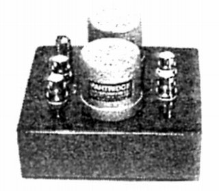

TK-5423

■価格 235,000円
■型式
MC型カートリッジ用昇圧トランス
■一次インピーダンス 1.5Ω
■二次インピーダンス 50または200Ω（ユーザーが選択）
■昇圧比
■周波数帯域
■クロストーク
■全高調波歪率
■重量 700g
■寸法 W10.0×H9.0×D7.0cm
■発売
1991年（再発売 1994年12月）
■販売終了 1993〜94年頃
■備考 価格は1993年頃のもの
オルトフォンのSPUなどローインピーダンス系MCカートリッジ用
「オーディオニックス」扱いだったが、代理店解約解消で販売が途絶えたようだ。
「リスニングデバイスディビジョン」が新たに代理店となった際に、主力のトランス
TK-5423CがXLRコネクター仕様であるため、受注生産モデルとして再販売。
二次インピーダンスは200Ωの仕様で、価格は1994年頃が245,000円、1999年頃には188,000円。
AUDIONIXのインデックスへ